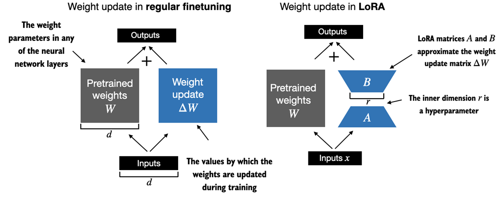
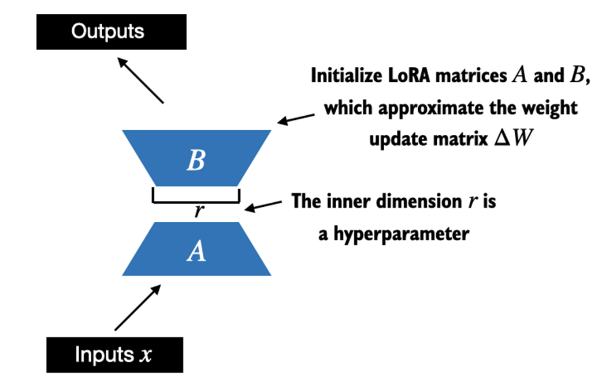
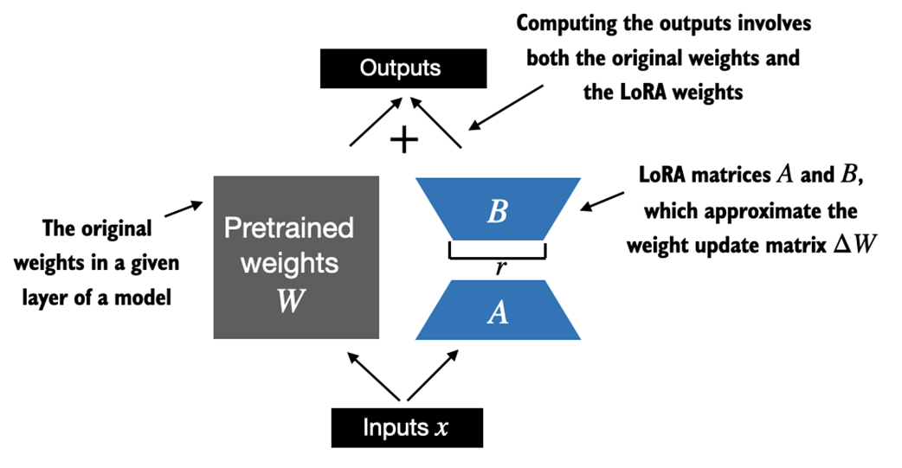

E.1 Introduction to LoRA
LoRA (Low-Rank Adaptation): Adapts a pretrained model by adjusting only a small subset of weight parameters. "Low-rank" means limiting adjustments to a smaller dimensional subspace, capturing the most influential directions of weight changes. Benefits: significantly cuts computational costs and resources for fine-tuning.
Mathematical Foundation
- Regular training weight update: W_updated = W + dW
- LoRA approximation: dW ~ AB where A and B are much smaller matrices
- Reformulated: W_updated = W + AB
Figure E.1 -- Regular Fine-Tuning vs LoRA

From the book (Raschka, 2025)Regular fine-tuning (left): updates pretrained weights W directly with full dW (d x d). LoRA (right): uses two smaller matrices A (d x r) and B (r x d), where r is a hyperparameter. The product AB approximates dW.
Distributive Property
- Regular: x(W + dW) = xW + xdW
- LoRA: x(W + AB) = xW + xAB
- LoRA weights can be kept separate from original model weights
- Practical advantage: No need to store multiple complete LLM versions -- only the smaller LoRA matrices per application
E.2 Preparing the Dataset
Repeats data preparation from chapter 6 (spam classification): download SMS Spam Collection, balance classes, split 70/10/20.
Listing E.1-E.3: Dataset and DataLoader Setup
download_and_unzip_spam_data(url, zip_path, extracted_path, data_file_path)
df = pd.read_csv(data_file_path, sep="\t", header=None, names=["Label", "Text"])
balanced_df = create_balanced_dataset(df)
balanced_df["Label"] = balanced_df["Label"].map({"ham": 0, "spam": 1})
train_df, validation_df, test_df = random_split(balanced_df, 0.7, 0.1)
tokenizer = tiktoken.get_encoding("gpt2")
train_dataset = SpamDataset("train.csv", max_length=None, tokenizer=tokenizer)
train_loader = DataLoader(dataset=train_dataset, batch_size=8,
shuffle=True, drop_last=True)
# Input: torch.Size([8, 120]), Labels: torch.Size([8])
# 130 training, 19 validation, 38 test batches
E.3 Initializing the Model
Listing E.4: Loading Pretrained GPT Model
CHOOSE_MODEL = "gpt2-small (124M)"
BASE_CONFIG = {
"vocab_size": 50257, "context_length": 1024,
"drop_rate": 0.0, "qkv_bias": True
}
BASE_CONFIG.update(model_configs[CHOOSE_MODEL])
settings, params = download_and_load_gpt2(model_size="124M", models_dir="gpt2")
model = GPTModel(BASE_CONFIG)
load_weights_into_gpt(model, params)
model.eval()
# Verify: "Every effort moves you forward.
# The first step is to understand the importance of your work"
Replace output layer for classification:
torch.manual_seed(123) num_classes = 2 model.out_head = torch.nn.Linear(in_features=768, out_features=num_classes) # Initial accuracy: ~46-49% (random)
E.4 Parameter-Efficient Fine-Tuning with LoRA
Listing E.5: LoRA Layer Implementation
class LoRALayer(torch.nn.Module):
def __init__(self, in_dim, out_dim, rank, alpha):
super().__init__()
self.A = torch.nn.Parameter(torch.empty(in_dim, rank))
torch.nn.init.kaiming_uniform_(self.A, a=math.sqrt(5))
self.B = torch.nn.Parameter(torch.zeros(rank, out_dim))
self.alpha = alpha
self.rank = rank
def forward(self, x):
x = (self.alpha / self.rank) * (x @ self.A @ self.B)
return x
Key parameters:
rank governs inner dimension (balances adaptability vs efficiency). alpha is the scaling factor. Alpha is usually half, double, or equal to rank.
Listing E.6: LinearWithLoRA Layer
class LinearWithLoRA(torch.nn.Module):
def __init__(self, linear, rank, alpha):
super().__init__()
self.linear = linear
self.lora = LoRALayer(
linear.in_features, linear.out_features, rank, alpha)
def forward(self, x):
return self.linear(x) + self.lora(x)
Figure E.3 -- LoRA Integration

From the book (Raschka, 2025)Original pretrained weights W combined with LoRA matrices A and B. Since B is initialized with zeros, AB = 0 initially, so the model starts identical to the original.
Replacing Linear Layers
def replace_linear_with_lora(model, rank, alpha):
for name, module in model.named_children():
if isinstance(module, torch.nn.Linear):
setattr(model, name, LinearWithLoRA(module, rank, alpha))
else:
replace_linear_with_lora(module, rank, alpha)
Freezing and Applying LoRA
# Before: 124,441,346 trainable parameters
for param in model.parameters():
param.requires_grad = False
# After freezing: 0 trainable parameters
replace_linear_with_lora(model, rank=16, alpha=16)
# After LoRA: 2,666,528 trainable parameters (~50x reduction!)
Parameter Comparison
| Configuration | Trainable Parameters |
|---|---|
| Original model | 124,441,346 |
| After freezing | 0 |
| After LoRA (rank=16) | 2,666,528 |
Training Results
Listing E.7: Fine-Tuning with LoRA
optimizer = torch.optim.AdamW(model.parameters(), lr=8e-4, weight_decay=0.1)
num_epochs = 5
train_losses, val_losses, train_accs, val_accs, examples_seen = \
train_classifier_simple(
model, train_loader, val_loader, optimizer, device,
num_epochs=num_epochs, eval_freq=50, eval_iter=5,
tokenizer=tokenizer
)
# Training completed in 12.10 minutes.
Training Progress
| Epoch | Train Loss | Val Loss | Train Acc | Val Acc |
|---|---|---|---|---|
| 1 | 0.063 | 0.144 | 100.00% | 92.50% |
| 2 | 0.054 | 0.045 | 100.00% | 95.00% |
| 5 | 0.019 | 0.252 | 100.00% | 100.00% |
Figure E.5 -- Loss Curves

From the book (Raschka, 2025)Both training and validation loss decrease sharply initially, then level off. Model is converging; not expected to improve noticeably with further training.
Final Accuracy
Final Results
| Dataset | Accuracy |
|---|---|
| Training | 100.00% |
| Validation | 96.64% |
| Test | 98.00% |
Key Takeaway: 98% test accuracy with only 2.7M LoRA parameters (vs 124M original) -- a ~50x reduction in trainable parameters while maintaining excellent performance. LoRA is highly effective for parameter-efficient fine-tuning.
Training time note: LoRA training took longer than without LoRA for this small model (extra computation in forward pass). For larger models, LoRA trains faster because backpropagation cost is significantly reduced.